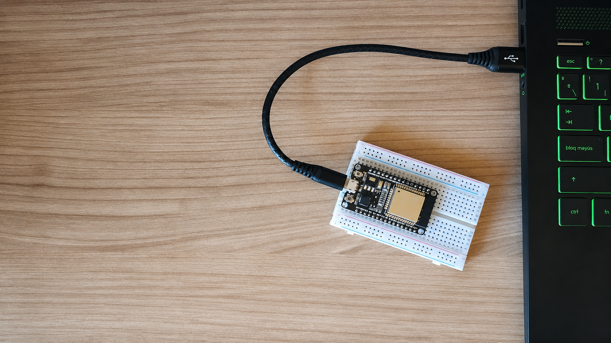
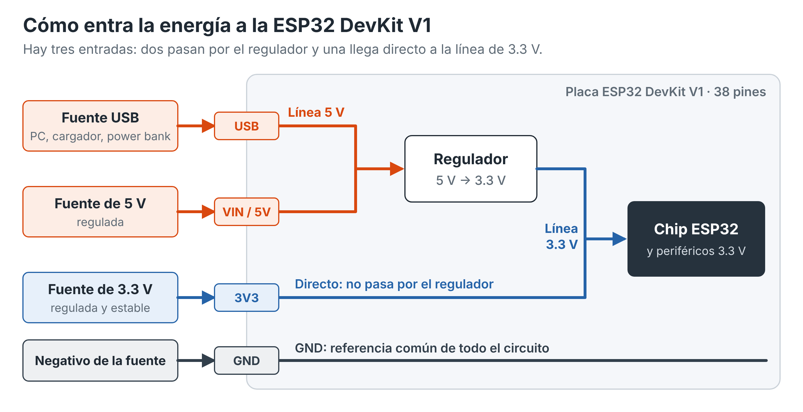
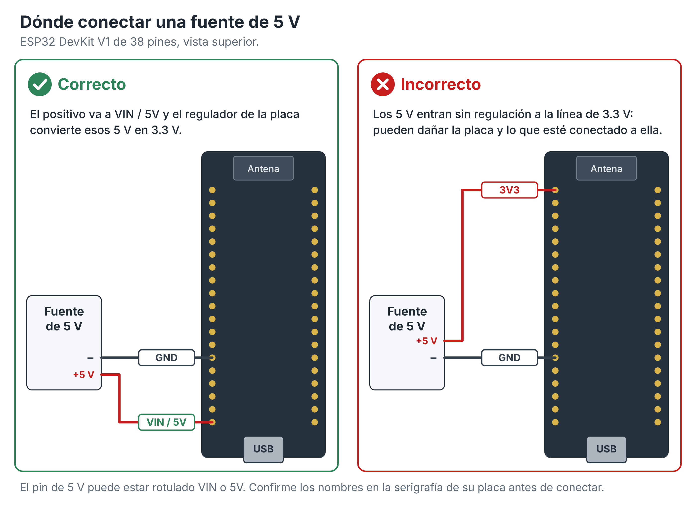
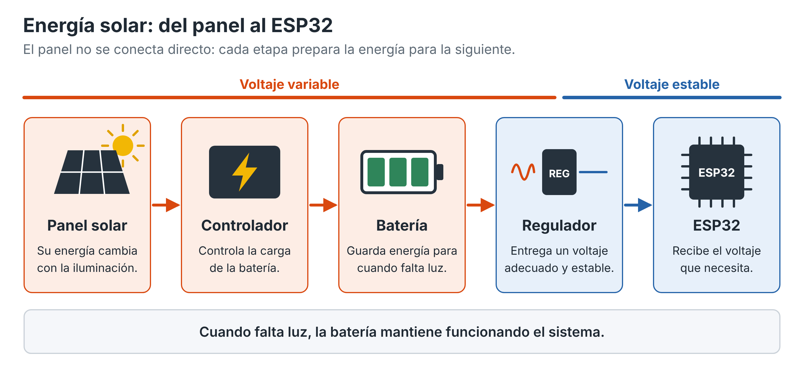
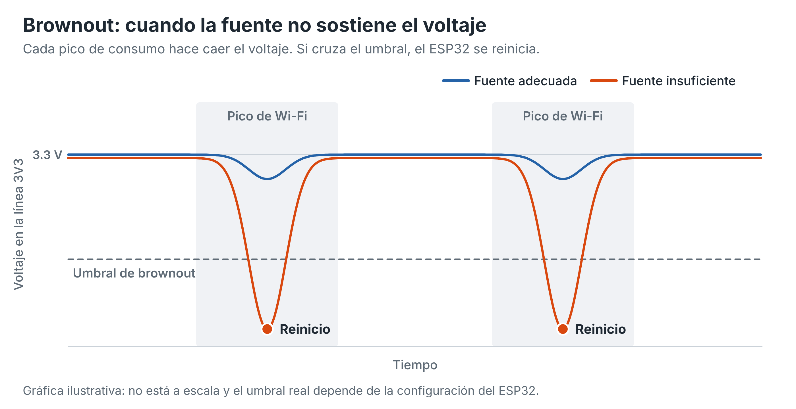
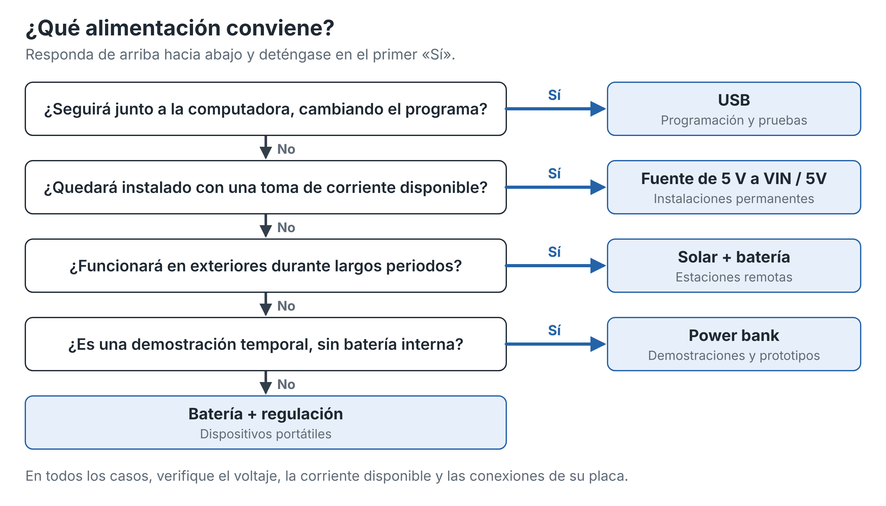

Laboratorio 8 - Formas de alimentación del ESP32
Introducción
Un ESP32 necesita un voltaje adecuado y corriente suficiente. Una alimentación incorrecta puede provocar reinicios, errores de comunicación, lecturas inestables e incluso daños permanentes en la placa.
En esta guía se presentan las principales formas de alimentar una placa ESP32, sus diferencias y cuándo conviene utilizar cada una.

Conceptos básicos
| Concepto | Descripción | Unidad |
|---|---|---|
| Voltaje (V) | Diferencia de potencial eléctrico entre dos puntos. | Voltios (V) |
| Corriente (I) | Flujo de carga eléctrica. | Amperios (A) o miliamperios (mA) |
| Potencia (P) | Energía eléctrica utilizada por unidad de tiempo. | Watts (W) |
Estas magnitudes se relacionan mediante:
P = V × IVoltajes importantes en una placa ESP32
| Elemento | Voltaje típico | Descripción |
|---|---|---|
| USB | 5 V nominales | Alimenta la placa mediante el puerto USB. |
| VIN / 5V | 5 V | Entrada para una fuente externa regulada, según el diseño de la tarjeta. |
| 3V3 | 3.3 V | Línea que alimenta al ESP32 y a diversos periféricos. |
| GND | 0 V | Referencia común del circuito. |
Muchas placas incluyen un regulador que convierte los 5 V de USB o del pin correspondiente en el voltaje que requiere el ESP32.
Métodos de alimentación

1. USB
Es la forma más utilizada: el mismo cable sirve para programar la placa y alimentarla desde una computadora, un cargador o una fuente USB. Es ideal para prototipado y laboratorio, pero no siempre conviene en proyectos autónomos o instalados lejos de una computadora.
2. VIN o 5V
El pin VIN o 5V puede recibir 5 V regulados de una fuente externa. Conviene cuando esa fuente también alimenta otros componentes o cuando el sistema queda instalado de forma permanente.
El positivo de la fuente se conecta a VIN / 5V y el negativo a GND.
3. 3V3 directo
Consiste en suministrar 3.3 V regulados a la línea de 3V3, evitando parte de la regulación de la placa. La fuente debe ser estable y entregar corriente suficiente para el ESP32 y sus periféricos.

4. Fuente externa regulada
Permite alimentar el ESP32 sin depender de una computadora, por ejemplo con una fuente de laboratorio o un adaptador DC con regulación adecuada. Si el voltaje disponible no es el correcto, se usa un convertidor: por ejemplo, 12 V nunca deben ir directamente al pin 3V3.
12 V → Buck → 5 V → ESP325. Baterías
Permiten proyectos portátiles o sin conexión permanente a la red. Las más comunes son las Li-ion y LiPo, de unos 3.7 V nominales, pero su voltaje cambia durante la carga y la descarga, así que no deben tratarse como una fuente fija de 3.3 V. Lo habitual es usarlas junto con un regulador.
Batería → Regulador → Voltaje estable → ESP326. Power bank
Funciona como una fuente USB portátil de unos 5 V, práctica para demostraciones y prototipos móviles. Algunos modelos se apagan solos al detectar un consumo muy bajo, algo a tener en cuenta si el ESP32 pasa mucho tiempo en bajo consumo.
Power bank → USB → ESP327. Energía solar
Útil en estaciones ambientales, sistemas agrícolas, telemetría y lugares sin toma de corriente. Un panel normalmente no se conecta directo al ESP32 porque su energía varía con la iluminación.

Regulación de voltaje
Un regulador obtiene una salida adecuada y estable a partir de una fuente con otra tensión.
| Tipo | Funcionamiento | Ejemplo |
|---|---|---|
| Lineal | Reduce el voltaje y disipa el sobrante como calor. | 5 V → 3.3 V |
| Buck | Reduce el voltaje mediante conmutación. | 12 V → 5 V |
| Boost | Eleva el voltaje por encima del de entrada. | 3.7 V → 5 V |
| Buck-Boost | Aumenta o disminuye el voltaje según la entrada. | Batería → voltaje fijo |
La elección depende del voltaje disponible y requerido, la corriente del sistema y la eficiencia deseada.
Corriente, consumo y estabilidad
La fuente debe alimentar el conjunto completo, no solo el microcontrolador. El consumo varía según el procesamiento, los picos de Wi-Fi y Bluetooth, y los periféricos conectados.
Fuente → ESP32 + sensores + pantalla + módulosBrownout

Además de los reinicios, otros síntomas de una alimentación deficiente son:
- Fallos al conectarse a Wi-Fi
- Lecturas incorrectas
- OLED que se apaga
- Errores de comunicación
- Comportamiento inconsistente
Comparación de métodos
| Método | Facilidad | Portabilidad | Aplicación común |
|---|---|---|---|
| USB | Alta | Media | Programación y pruebas |
| VIN / 5V | Alta | Depende de la fuente | Instalaciones y prototipos |
| 3V3 regulado | Media | Alta | Sistemas diseñados específicamente |
| Batería | Media | Muy alta | Proyectos móviles |
| Power bank | Muy alta | Alta | Demostraciones y prototipos |
| Solar | Baja | Muy alta | Sistemas remotos |
¿Cómo seleccionar la forma de alimentación?
Ningún método es el mejor para todos los proyectos. Tenga en cuenta si será portátil, cuánto tiempo debe funcionar, qué periféricos lleva, si hay energía eléctrica disponible y si usará modos de bajo consumo.

Errores comunes y buenas prácticas
| Error | Consecuencia |
|---|---|
| Aplicar 5 V al pin 3V3 | Esa línea no está diseñada para recibir 5 V y puede dañarse. |
| No conectar GND común | Los módulos con fuentes relacionadas pueden necesitar una referencia común. |
| Utilizar una fuente insuficiente | Puede generar caídas de voltaje y reinicios. |
| Conectar una batería sin regulación | Su voltaje puede no corresponder con el que requiere la placa. |
| Confundir VIN con 3V3 | Son líneas con funciones diferentes. |
| Usar varias fuentes sin verificar el circuito | USB y fuente externa a la vez se comportan distinto según la placa. |
Buenas prácticas
- Medir el voltaje de la fuente antes de conectarla.
- Identificar VIN, 5V, 3V3 y GND, y revisar la polaridad.
- Utilizar fuentes reguladas o reguladores cuando haga falta.
- Considerar el consumo de todos los componentes.
- Utilizar circuitos apropiados para cargar baterías.
- Consultar la documentación de la placa utilizada.
Entregable
Después de estudiar la guía, cada estudiante deberá elaborar un reporte resumen sobre las diferentes formas de alimentación del ESP32.
El documento deberá demostrar que el estudiante comprendió las principales opciones de alimentación, sus características, ventajas, precauciones y posibles aplicaciones.
Contenido mínimo del reporte
- Explicación breve de qué significa alimentar correctamente un ESP32 y la importancia de considerar el consumo de corriente.
- Diferencia entre alimentar mediante USB, VIN/5V y 3V3.
- Explicación del uso de baterías y la necesidad de regulación.
- Explicación breve de los reguladores Buck y Boost.
- Al menos tres buenas prácticas para evitar daños o funcionamiento inestable.
- Una conclusión personal sobre qué método de alimentación elegiría/eligio para su proyecto y por qué.